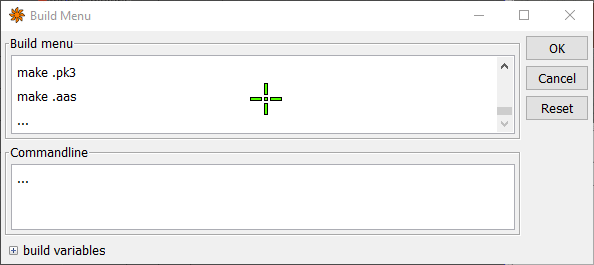
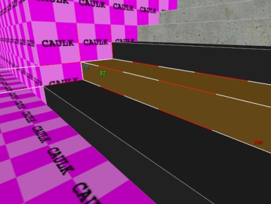
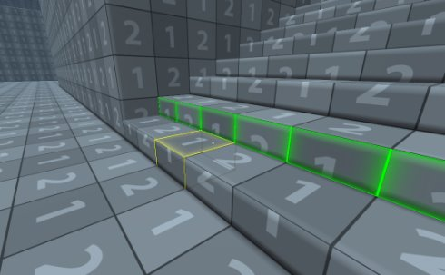
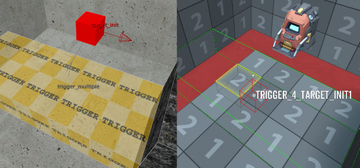

Download the map converter tool here
If you do not already have radiant, you can download it here: NetRadiantCustom
Place mapper.exe, dbt_template_v26.rbe, and q3_dbt_materials.txt in Radiant's main directory (where radiant.exe lives)
Open up Radiant and go to Build->Customize...
Scroll to the end of the build menu and click on the ... to create a new item
Set the commandline for the new build menu item to the following:
mapper.exe q3-dbt "[MapFile]" "%APPDATA%\\Diabotical\\Maps\\[MapName].rbe"
You can now go ahead and start mapping in radiant. If everything worked correctly the new build option should create a Diabotical map with the same name as your Quake 3 map. If you have Diabotical open you can then use /edit my_map_name to load it.
6 - sets grid size to 32u)5 sets grid size to 16u)Here you can see a 16 unit tall brush get converted to a single slab in DBT:

You can convert quake 3 materials to DBT materials by adding entries in the q3_dbt_materials.txt file.
1hueta/oldstone1=sport_concrete01_red
1hueta/oldstone7=concrete_wall_01
Create spawns using an info_player_start entity.
Supported keys: angle

Connect a trigger_multiple brush to a target_startTimer or target_stopTimer entity.

Connect a trigger_multiple brush to a target_kill entity.
Connect a trigger_teleport brush to a misc_teleporter_dest entity.
The trigger_teleport entity supports the following keys: speed_mode, speed, angle_mode, view_angle_mode, reset
The misc_teleporter_dest entity supports the following keys: angle

The following weapon entities are converted: weapon_rocketlauncher, weapon_plasmagun
Supported keys: time - sets pickup respawn time in seconds

Connect a trigger_multiple brush to a target_init entity.
